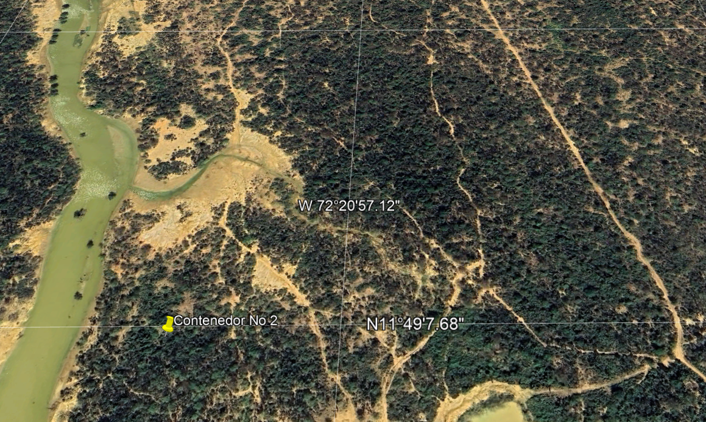

Escalamiento del Proyecto AQUA-8
De un contenedor a una red de autonomía hídrica para La Guajira
La Línea Roja — Agua para Todas las Comunidades
El proyecto AQUA-8 no termina en un contenedor. La visión de escalamiento consiste en una línea roja a lo largo de la costa donde múltiples contenedores se instalan estratégicamente para abastecer a todas las comunidades Wayúu de la región.
El Contenedor No 1 (Manaure) es el piloto que valida la tecnología. Una vez probado, se replicará el modelo a lo largo del litoral, creando una red de autonomía hídrica que rodea la comunidad de Uribia, tanto por el Atlántico como por el golfo de Morrosquillo.

Coordenadas de los Contenedores
El proyecto se enfoca en la instalación del Contenedor No 1 como piloto. Los demás contenedores se colocarán a lo largo del río de agua de mar, siguiendo la línea roja de escalamiento.
- Contenedor No 1 (Piloto): 11°49'37.67"N — 72°21'8.24"W
- Contenedor No 2: 11°49'7.35"N — 72°21'1.42"W
- Zona de influencia: Uribia — cubierta por ambos frentes costeros
- Frente Atlántico: costa norte de La Guajira
- Golfo de Morrosquillo: acceso por el sur

De 1 a N Contenedores
Cada contenedor produce 3,000 L/día de agua potable. Con una red de contenedores a lo largo de la línea roja, el impacto se multiplica:
- Fase I (Piloto): 1 contenedor — 3,000 L/d — 150 personas
- Fase II: 5 contenedores — 15,000 L/d — 750 personas
- Fase III: 20 contenedores — 60,000 L/d — 3,000 personas
- Escalamiento total: Red completa a lo largo de la línea roja costera

Configuración del Contenedor Piloto
El Contenedor No 1 integra todos los subsistemas validados en el diseño FEED: captación, pre-tratamiento, ósmosis inversa, post-tratamiento, energía solar y control SCADA.
- Contenedor marítimo 20' reacondicionado
- Sistema 100% solar — ~12 kWp
- Monitoreo remoto vía AQUA-CLOUD
- Sin baterías — VFD solar directo
- Salmuera a economía circular (salinas artesanales)